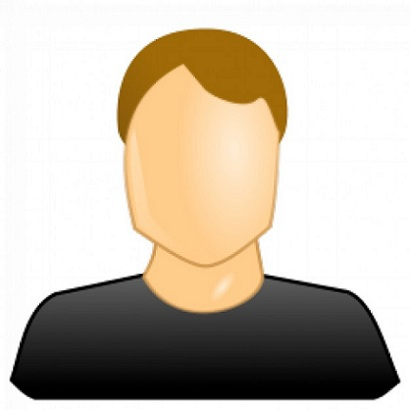

<ion-header>
  <ion-toolbar>
    <ion-title>Settings</ion-title>
    <ion-buttons slot='end'>
      <ion-menu-button></ion-menu-button>
    </ion-buttons>
  </ion-toolbar>
</ion-header>

<ion-content>
  <div class="success-background ion-padding">
    <ion-avatar (click)="takePhoto()">
      
      
    </ion-avatar>
    <h1>Manuel Narváez</h1>
    <h2>manuel260497@gmail.com</h2>
    <ion-grid>
      <ion-row align-items-center text-center class="row-header ion-text-center">
        <ion-col>150</ion-col>
        <ion-col>3k</ion-col>
        <ion-col>500</ion-col>
      </ion-row>
      <ion-row align-items-center text-center class="ion-text-center">
        <ion-col>Artistas</ion-col>
        <ion-col>Seguidores</ion-col>
        <ion-col>Canciones</ion-col>
      </ion-row>
    </ion-grid>
  </div>
</ion-content>
